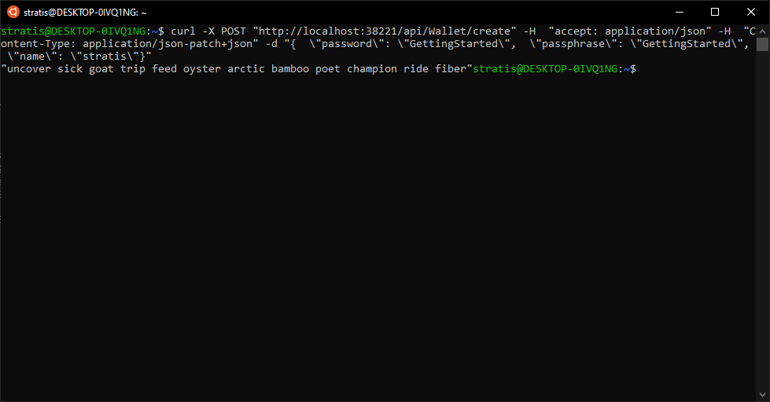
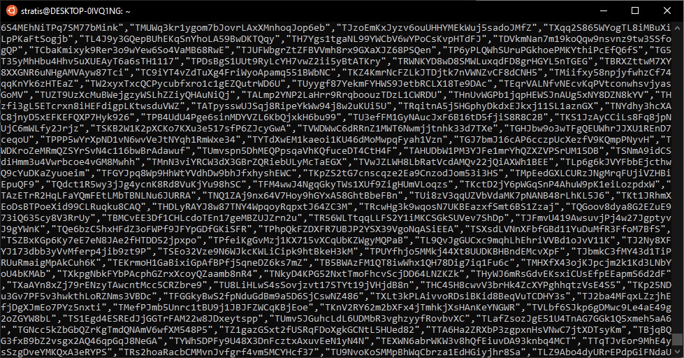

Interacting with the Stratis Node¶
Here we will demonstrate how to interact with the node via cURL on a Linux based Operating System. If running the Stratis Full Node on a Windows Operating System you can utilise the Swagger Interface by launching an internet browser and navigating to the below URL:
Obtaining a Block Hash¶
The first thing we can do is return the hash of a given block number.
curl -X GET "http://localhost:27103/api/Consensus/getblockhash?height=100" -H "accept: application/json"
The above graphic shows the response from querying the hash of block number 100, if you also executed the command, you should see the below result.
1d5bd3e7b2d940ff0152f004c6b25f87fdc8282fe41a963159bdd83fd13403d5
Creating a Wallet¶
The next task we will perform is the creation of a hierarchical deterministic wallet. To do this, we call the wallet/create endpoint by executing the below command.
curl -X POST "http://localhost:27103/api/Wallet/create" -H "accept:application/json" -H "Content-Type: application/json-patch+json" -d "{\\"password\": \\"**GettingStarted**\\", \\"passphrase\":\\"**GettingStarted**\\", \\"name\": \\"**stratis**\\"}"
The above command will return you with a list of words, as seen in the below graphic.
{kind=link}
These twelve words and your defined passphrase will be the seed for the wallet you have just created. More information regarding the hierarchical deterministic standard and mnemonic words please review the below.
https://en.bitcoin.it/wiki/BIP_0032
Generating Addresses¶
As we are utilising hierarchical deterministic wallets, we can create a large number of addresses to be utilised and/or assigned to specific users’ dependent upon the use-case.
Large numbers of addresses can be created by utilising the wallet/unusedaddresses endpoint.
curl -X GET http://localhost:27103/api/Wallet/unusedaddresses?WalletName=stratis&Count=100000" -H "accept: application/json"
The above command will generate 100,000 addresses and will monitor the blockchain for outputs that relate to one of the generated addresses.
{kind=link}
The addresses will be printed to the console and can be saved in JSON by performing the below command.
curl -X GET "http://localhost:27103/api/Wallet/unusedaddresses?WalletName=stratis&Count=100000" -H "accept: application/json" >> ./addresses.json
Start Staking¶
As the Stratis blockchain utilises a Proof-of-Stake consensus algorithm, blocks are produced by staking nodes on the network.
Staking can be activated by calling the Staking/startstaking endpoint.
curl -X POST "http://localhost:27103/api/Staking/startstaking" -H "accept: application/json" -H "Content-Type: application/json-patch+json" -d "{ \\"password\": \\"**GettingStarted**\\", \\"name\": \\"**stratis**\\"}"
Staking information can also be retrieved by calling the Staking/getstakinginfo endpoint.
curl -X GET "http://localhost:27103/api/Staking/getstakinginfo" -H "accept: application/json"
{kind=link}
To stop Staking, simply stop the running node or call the Staking/stopstaking endpoint.
curl -X POST "http://localhost:27103/api/Staking/stopstaking" -H "accept: application/json" -H "Content-Type: application/json-patch+json" -d "{}"
Listing RPC Methods¶
All available RPC methods can be returned from the RPC/listmethods endpoint. However, we need to enable the RPC Server.
This can be done by editing the stratis.conf in the data directory or alternatively by specifying the below parameters when starting the node.
-server=1 -rpcuser=stratis rpcpassword=stratis -rpcallowip=127.0.0.1/32
Appending this to the current start parameters will allow you to interact with the Stratis Full Node via RPC.
./Stratis.StratisD -testnet=1 -datadir=./ -server=1 -rpcuser=stratis rpcpassword=stratis -rpcallowip=127.0.0.1/32
Once the Stratis Full Node has started, the available RPC Methods can be returned by calling the RPC/listmethods endpoint.
curl -X GET "http://localhost:27103/api/RPC/listmethods" -H "accept: application/json"